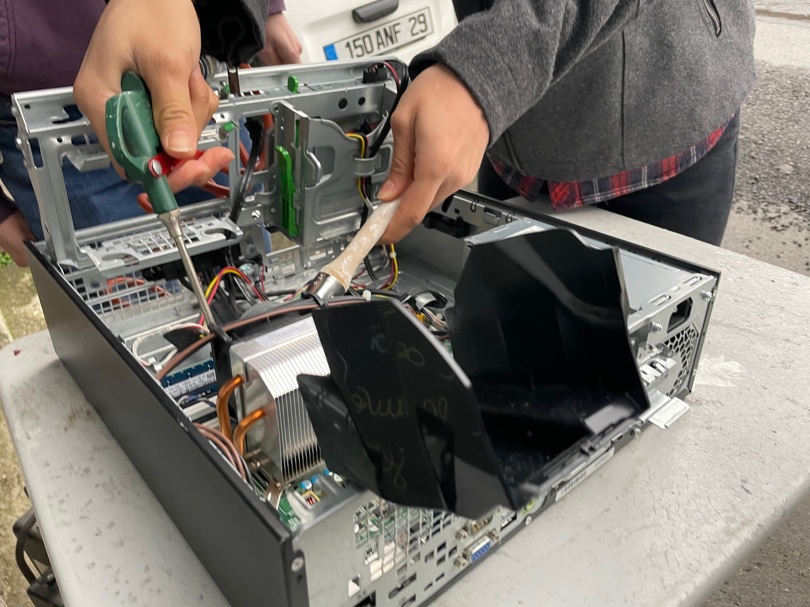
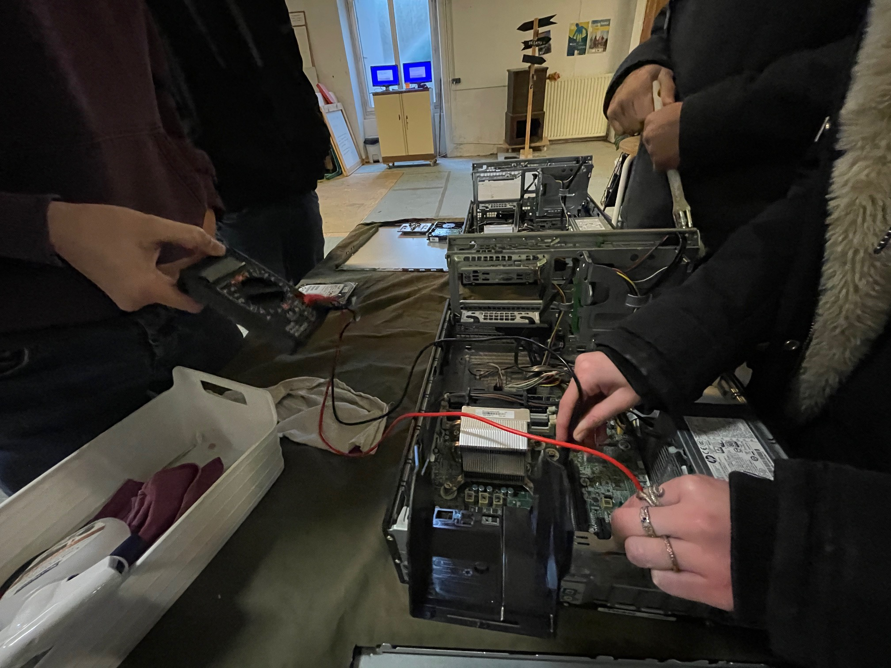

Thème : Initiation au reconditionnement de matériel informatique.
Type : Pair-à-Pair / Durée : 1h30

Déroulement :
1- Présentation du chantier d’insertion.
2- Démonstration d’un reconditionnement.
3- Présentation du processus de clonage.
4- Mise en pratique.
5- Evaluation ludique des acquis.

Le protocole de reconditionnement
1- Ouverture du boîtier.
2- Enlever les caches.
3- Extraire le disque dur.
4- Passer le pinceau dans les pales du (des) ventilateur(s).
5- Passage à la soufflette.
6- Test de la pile.
7- Installation d’un disque dur cloné.
8- Fermeture et nettoyage du boîtier.
Le traitement des disques durs
Trois procédés sont expliqués :
- Le clonage de disques ou de partitions simultanément. (copie un disque dur sur un autre)
- La purge de disques par réécriture. (effacement des données)
- La récupération de données.
- En raison du contexte sanitaire actuel, les ateliers s'effectuent en comité restreint. Contacter Michel Clech via clech.michel@wanadoo.fr pour en savoir plus.
Les participants réalisent les différentes étapes du reconditionnement.
L'atelier se termine par une évaluation des acquis sous forme d'échanges ludiques.
Code source en libre accès sur github sous license GPL.